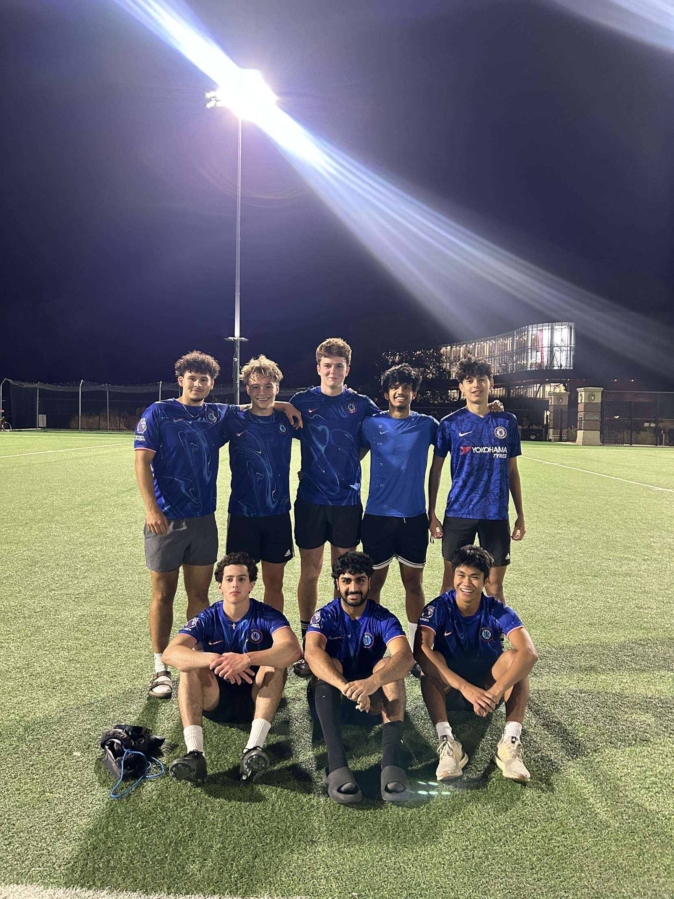

Engaging in hobbies like archery, soccer, boxing, fishing, and hunting has profoundly impacted my life, enriching me both mentally and physically. Archery has taught me focus and patience, while soccer has improved my teamwork skills and endurance. Boxing has instilled discipline, resilience, and a strong sense of mental toughness. Fishing provides me with moments of peace, fostering a deeper connection with nature, while hunting has strengthened my problem-solving abilities and appreciation for preparation and persistence. Together, these hobbies lift my spirits, making me more balanced, unique, and intellectually sharper, as they constantly challenge me to grow in different ways and push my limits.
Archery

- Skills developed:
- Discipline, Focus, Problem-solving, Physical fitness
- Why I enjoy it:
- It’s a mentally and physically challenging activity that keeps me learning and improving.
Soccer
- Skills developed:
- Teamwork, Communication, Physical fitness, Strategic thinking
- Why I enjoy it:
- Soccer is a fast-paced team sport that teaches you how to think on your feet while working closely with teammates.
Boxing

- Skills developed:
- Endurance, Mental toughness, Focus, Self-defense
- Why I enjoy it:
- Boxing pushes my limits physically and mentally, allowing me to continually challenge myself in every aspect of the sport.
Fishing

- Skills developed:
- Patience, Focus, Relaxation, Connection with nature
- Why I enjoy it:
- Fishing offers a peaceful escape from the hustle and bustle of daily life, allowing me to enjoy nature and relax.
Hunting

- Skills developed:
- Patience, Focus, Strategy, Survival skills
- Why I enjoy it:
- Hunting connects me with the outdoors while honing my ability to be resourceful and patient in nature.